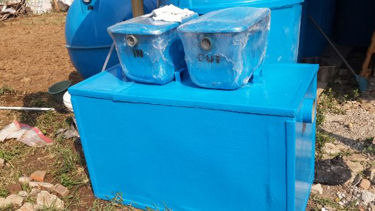
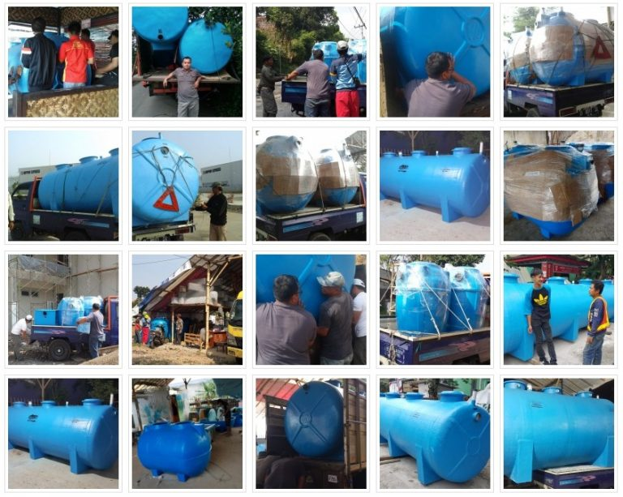

Apakah Anda sedang membutuhkan informasi mengenai Jasa Pembuatan Bio Septictank Siap Kirim Ke Haurpugur – Rancaekek Kota Bandung (40394)? Bila benar, Anda berada di situs website yg sangat tepat. Simak informasi penting berikut!

Apa Itu Bio Septictank?
Apa yang dimaksud Septictank Biotech? Apabila belum mengetahuinya, Bio Septic Tank yaitu produk yang di rancang kusus sebagai pengganti sepiteng yang biasanya ada di rumah-rumah / biasa disebut septictank konvensional, septic tank ini terbuat dari bahan fiberglass yang memiliki mutu tinggi & anti korosi, juga di lengkapi bersama system pengolahan limbah tinja dari kloset yang memanfaatkan biofilter serta bioball.
Biofilter dan bioball ini berfungsi sebagai penyaring dan hunian rumah bakteri pengurai yang memiliki fungsi sebagai memetabolisme tinja dan ahirnya dijadikan limbah cari yang cairannya sudah boleh dibuang melalui pipa outlet yang telah ramah lingkungan & dilengkapi dengan tabung disinfektan yang bisa diisi bersama tablet disinfektan yang dapat membunuh kuman. Bentuk cair dari pengelolaan terakhir septic tank ini ramah lingkungan karena bakteri berbahaya yang terkandung didalam tinja telah di netralisirkan oleh pengurai bakteri.
mengenai lingkungan sering membuat kita resah, dikarenakan masalah tentang lingkungan ialah masalah bersama, lingkungan sekitar kita terancam maka itu artinya kita pun ikut terancam, Memperhatikan masalah lingkungan berupa pencemaran limbah khususnya dapat klien siasati dengan memakai Septictank Biotech ini.
Dengan menggunakan Septictank Biotech ini, limbah tinja rumah tangga sudah aman bila dibuang ke saluran air karena telah melintasi sekian banyak tahap yang membuatnya menjadi ramah lingkungan.
Bagaimana Cara Kinerja Septictank Biotech?
Utk cara kerja dari Septictank Biotech ialah sebagai di bawah ini :
1. Kotoran Limbah Ditampung.
Saat anda mengeluarkan limbah kotoran, limbah tersebut masuk kedalam Closet ke Septictank Bio Tech, lalu tertampung di dalam Septictank Bio Tech. Pada penampungan tersebut limbah akan difilter serta menjadikan ukuran limbah menjadi lebih kecil dari sebelumnya.
2. Tinja Di Uraikan.
Sesudah ukuran nya berubah jadi lebih kecil, langkah berikutnya adalah limbah diuraikan oleh bakteri husus yang akan menopang menguraikan limbah bersama cepat. Dengan hasil keluaran berupa cairan saja.
3. Di Filter Kembali.
Setelah limbah berubah menjadi cair, tak lupa melewati filter ke dua untuk mengubah Tinja yang kini cair menjadi limbah ramah lingkungan yang dapat dialirkan ke saluran air biasa.
Manfaat Memiliki Septictank Bio Tech
Ada sekian banyak keuntungan yang dapat customer rasakan seandainya memakai jikalau Anda pilih Bio Septictank sebagai septictank hunian rumah Kamu diantaranya merupakan :
Keuntungan Memakai Septic Tank Biotech
1. Ramah Lingkungan.
Dengan menggunakan produk ini, Kamu ikut menjaga kebersihan lingkungan sekitar Anda dikarenakan hasil buangan dari pengelolahan Tinja pada Bio Septic Tank yaitu ramah lingkungan yg sudah tak mengandung bakteri berbahaya. Meskipun hasil pengelolahannya dibuang pada saluran air biasa, air tidak akan tercemar.
2. Dapat Terhindarnya dari Pencemaran Air
Berlainan dari septic tank konvensional, septictank type ini bisa apabila hasil keluaranya dibuang ke saluran air tidak akan mengotori air karena penguraian bakterinya yang sangat-sangat sempurna. Maka pilihan cocok bagi Kamu yang memilih Septictank Bio Tech sebagai septictank rumah Anda.
3. Hasil Keluaran tidak Berbau
Hasil keluaran dari Septictank Bio Tech dalam bentuk cair dan tidak berbau. dikarenakan keunggulan dari septictank inilah yang membuat Septictank Bio Tech ini terjual Septictank Biotech laris di pasaran.
4. Daya Tampung Banyak dan tidak Bocor
Daya tampung dari Bio Septic Tank ini cukup banyak adalah sekitar 500 liter sampai bersama tidak. & Septictank Biotech ini tahan lama dikarenakan menggunakan serat Fiber yang tebal. Meski serat fiber dipendang dalam tanah dnegan waktu yang sangat lama, serta tak akan rusak maupun mengurai.
Sekilas Tentang Mega Septictank
Mega Septic Tank ialah salah satu website yang membahas tentang Septictank Bio Tech serta beraneka macam keuntungan yang dapat Anda dapatkan jika memakai product Septictank Biotech pada rumah tangga Anda
MegaSeptictank ini mengkampanyekan pemakaian Septictank Biotech, agar lebih banyak warga yang sadar untuk serta-merta memakai Bio Septic Tank dan menangani masalah lingkungan yang tidak kunjung usai.
Kenapa Mesti Menggunakan Bio Septictank?
Seperti keuntungan yg bisa Kamu dapatkan di atas, telah pasti Anda mesti pilih Bio Septictank sebagai septictank Anda bukan? Kelebihan yang sangat banyak dan yg paling mutlak merupakan ramah lingkungan ini tentu sangat membatu Anda dalam menangani permasalahan di lingkungan sekitar Anda.
Septictank Bio Tech yang tak serupa dari septictank konvensional akan sangat menunjang permasalah sanitasi di hunian Kamu
Perbedaan Septictank Konvensional Bersama Bio Septictank
Berikut merupakan perbedaan Septic Tank Konvensional dengan Bio Septic Tank yang perlu Anda ketahui supaya lebih mendalami kelebihan dari Bio Septic Tank. Adalah seperti berikut :
1. Septictank Konvensional Mengandalkan Daya Resap Tanah
septic tank konvensional yang mengedepankan daya resap kedalam tanah memerlukan banyak sekali tanah yang kering.
Maka bisa bersama cepat meresapkan kotoran ke tanah.
Tanah yang ada di mata air yang subur dan banyak tentunya sangat sulit meresapkan limbah Kotoran dari wc, karena kategori tanah ini condong lembab, yang tentunya berahir pada WC penuh.
Jenis tanah seperti ini sering dijumpai pada daerah perbukitan. Mata air yang biasanya diandalkan sebagai sumber air akan sangat disayang kan jika tercemar bersama limbah Tinja karena air yang telah tercemar limbah tentu tak baik untuk di gunakan sebagai keperluan sehari-hari yang biasa kita kerjakan seperti seperti cuci Baju mandi, minum, kendaraan dll
Periode hujan menyebabkan tanah tak dapat lagi menampung air pada permukaan tanah. Seperti halnya tampungan dari septic tank jenis beton ini, Masa hujan yang rata rata berlangsung di setengah tahunan. Jikalau Anda ada pada daerah Jabodetabek dengan struktur tanah yang sangat kurang baik untuk menampung curah hujan sehingga tak jarang terjadi banjir berdampak WC penuh yang nantinya akan mencemari lingkungan hunian maupun pun tempat tinggal kita.
Air Tinja akan meluap ke permukaan septictank kita serta wc penuh juga tak dapat dihindari. Terlebih bila saat banjir bandang, Tinja pada KLOSET yang terlau penuh bisa mencemari air Banjir dan berdampak kepada kesehatan penduduk karena ikut terjun kedalam banjir.
2. Bio Septic Tank.
Perbedaan yang sangat mendasar dari septic tank biotech bersama septictank konvensional yaitu menjadikan lingkungan menjadi semakin baik. Dengan adanya product ramah lingkungan ini akan membuat setiap kehidupan lebih sehat serta terjamin.
Apakah Kamu pernah mendengar mutu air tanah yang berbau dan berwarna, mungkin ini di sebabkan oleh septictank yang tak menggunakan pengolahan dengan sistem yang baik sehingga dan ramah lingkungan sehingga air dalam tanah ikut tercemar.
Dikarenakan Septictank Biotech ini dilengkapi bersama filter yang memiliki fungsi utk menyaring Tinja yang masuk ke dalam Septictank sehingga bau dari kotoran tak akan tercium, walaupun hasil keluaran dari Septic Tank ini berbentuk cair.
Namun apabila Kamu akan mengalirkanya ke saluran air, saluran air tidak akan tercemar bakteri berbahaya dikarenakan bakteri telah dihancurkan oleh bakteri pengurai yang baik.
Ukuran Bio Septictank
Buat ukuran dari Bio Septictank tersedia tersedia sekian banyak variasi ukuran yang dapat Anda memilih sesuai dengan Kebutuhan Ada Septictank Bio Tech yang hadir dengan kapasitas sekitar 500 liter bersama ukuran yaitu diameter(D) sekitar 90cm dan tinggi 100cm.
Yang Kedua ada kapasitas volume sektar 800 liter. Septictank Bio Tech ini mempunyai ukuran diameter se besar 105cm serta tinggi sekitar 100cm. Yang terahir dengan ukuran terbesar adalah Bio Septictank dengan volume 1000 liter. Diameter dari septictan ini segede 120cm dan tinggi mencapai 110cm.
Septictank Biotech memiliki tiga ukuran yaitu kapasitas 500 Liter, kapasitas 800 Liter serta juga kapasitas tertinggia yakni 1000 liter, buat Harga Bio Septictank ini berbeda-beda tergantu ukuran yang Anda Perlukan Untuk mempunyai ukurannya pun Anda bisa menyesuaikan bersama kepentingan di hunian / tempat ada akan memasang Bio Septictank ini.
Untuk Info Lebih Lengkap Tentang Ukuran Septic tank biotech, Lihat Pada Gambar Di Bawah Ini :

Beberapa Sampel Barang Bio Septictank

Harga Bio Septic Tank yang di buat oleh jasa pembuatan Bio Septic Tank
Pesan Sekarang Juga!
Demikian artikel mengenai Jasa Pembuatan Bio Septictank Siap Kirim Ke Haurpugur – Rancaekek Kota Bandung (40394), mudah-mudahan berita berkaitan Septictank Bio Tech ini dapat sangat bermanfaat bagi Anda pecinta lingkungan yang tak mengingikan lingkungan sekitar jadi kotor.
Guna Konsultasi maupun Pemesanan, silahkan klik tombol berikut untuk menghubungi kami via WhatsApp
Sekian informasi tentang Jasa Pembuatan Bio Septictank Siap Kirim Ke Haurpugur – Rancaekek Kota Bandung (40394), semoga berguna